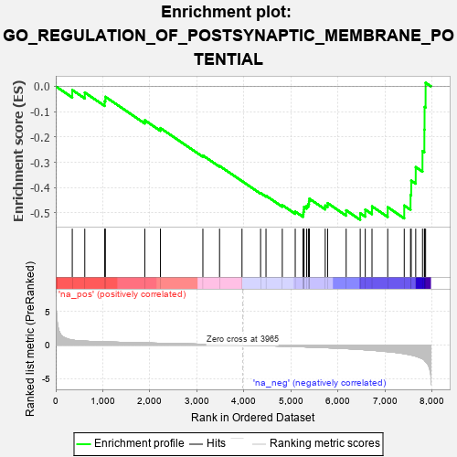
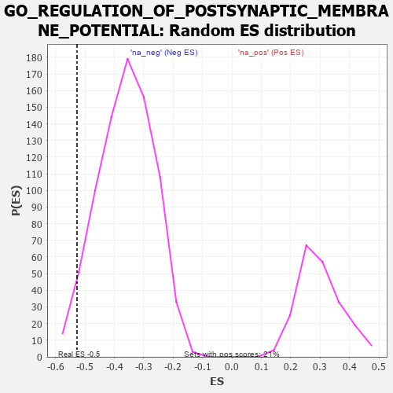

| | | Dataset | 7d |
| Phenotype | NoPhenotypeAvailable |
| Upregulated in class | na_neg |
| GeneSet | GO_REGULATION_OF_POSTSYNAPTIC_MEMBRANE_POTENTIAL |
| Enrichment Score (ES) | -0.52718973 |
| Normalized Enrichment Score (NES) | -1.4618325 |
| Nominal p-value | 0.0393401 |
| FDR q-value | 0.22928181 |
| FWER p-Value | 1.0 |
Table: GSEA Results Summary

Fig 1: Enrichment plot: GO_REGULATION_OF_POSTSYNAPTIC_MEMBRANE_POTENTIAL
Profile of the Running ES Score & Positions of GeneSet Members on the Rank Ordered List
| PROBE | GENE SYMBOL | GENE_TITLE | RANK IN GENE LIST | RANK METRIC SCORE | RUNNING ES | CORE ENRICHMENT | | 1 | GSK3A | | | 351 | 0.745 | -0.0145 | No |
| 2 | KCND2 | | | 617 | 0.590 | -0.0244 | No |
| 3 | AKT1 | | | 1040 | 0.476 | -0.0586 | No |
| 4 | MEF2C | | | 1054 | 0.473 | -0.0413 | No |
| 5 | GLRA2 | | | 1892 | 0.321 | -0.1340 | No |
| 6 | GRIK3 | | | 2224 | 0.272 | -0.1649 | No |
| 7 | MTMR2 | | | 3126 | 0.133 | -0.2731 | No |
| 8 | CDK5 | | | 3480 | 0.080 | -0.3144 | No |
| 9 | GLRA1 | | | 3957 | 0.001 | -0.3743 | No |
| 10 | ADRB2 | | | 4352 | -0.068 | -0.4212 | No |
| 11 | LRRK2 | | | 4467 | -0.087 | -0.4321 | No |
| 12 | P2RX4 | | | 4813 | -0.161 | -0.4691 | No |
| 13 | DRD2 | | | 5088 | -0.221 | -0.4948 | No |
| 14 | SSH1 | | | 5254 | -0.258 | -0.5053 | Yes |
| 15 | PTEN | | | 5262 | -0.261 | -0.4958 | Yes |
| 16 | RIMS2 | | | 5272 | -0.265 | -0.4864 | Yes |
| 17 | CELF4 | | | 5275 | -0.266 | -0.4760 | Yes |
| 18 | NPY2R | | | 5331 | -0.281 | -0.4718 | Yes |
| 19 | MPP2 | | | 5367 | -0.288 | -0.4647 | Yes |
| 20 | GRIN1 | | | 5381 | -0.291 | -0.4547 | Yes |
| 21 | DLG4 | | | 5388 | -0.293 | -0.4438 | Yes |
| 22 | DGKI | | | 5725 | -0.384 | -0.4708 | Yes |
| 23 | GLRB | | | 5776 | -0.398 | -0.4612 | Yes |
| 24 | GRID2 | | | 6170 | -0.528 | -0.4896 | Yes |
| 25 | GLRA3 | | | 6469 | -0.648 | -0.5013 | Yes |
| 26 | P2RX5 | | | 6576 | -0.699 | -0.4868 | Yes |
| 27 | GSK3B | | | 6719 | -0.768 | -0.4741 | Yes |
| 28 | GRM5 | | | 7053 | -0.969 | -0.4774 | Yes |
| 29 | GRM1 | | | 7404 | -1.272 | -0.4708 | Yes |
| 30 | GRIK1 | | | 7538 | -1.454 | -0.4295 | Yes |
| 31 | GRIK2 | | | 7552 | -1.471 | -0.3725 | Yes |
| 32 | GRIA3 | | | 7648 | -1.642 | -0.3189 | Yes |
| 33 | GRIK5 | | | 7792 | -2.044 | -0.2555 | Yes |
| 34 | GRIK4 | | | 7832 | -2.234 | -0.1712 | Yes |
| 35 | GRIA1 | | | 7836 | -2.260 | -0.0815 | Yes |
| 36 | GRID1 | | | 7858 | -2.465 | 0.0142 | Yes |
Table: GSEA details [plain text format]

Fig 2: GO_REGULATION_OF_POSTSYNAPTIC_MEMBRANE_POTENTIAL: Random ES distribution
Gene set null distribution of ES for GO_REGULATION_OF_POSTSYNAPTIC_MEMBRANE_POTENTIAL